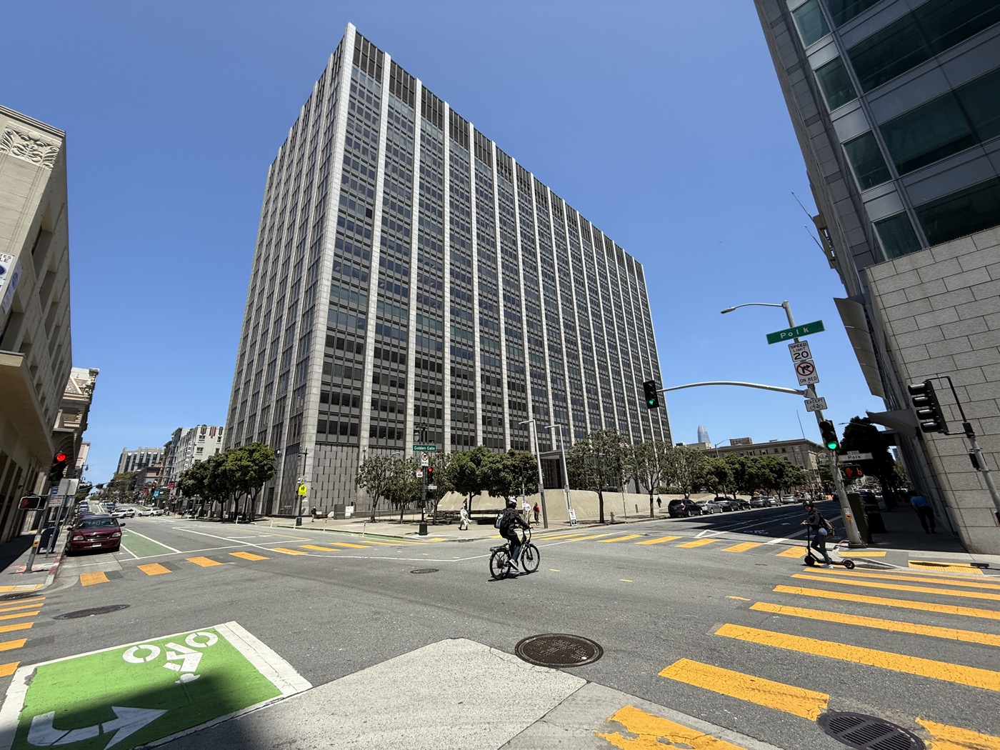

Executive Summary
이 글은 2026년 10월 21일 음악 퍼블리셔 리저부어가 수노와 앤트로픽을 상대로 캘리포니아 북부연방지법에 낸 두 건의 소장을 읽는다. 청구 총액은 3억 3,778만 달러다. 눈여겨볼 대목은 총액이 아니라 청구서가 세 층으로 쪼개져 있다는 점이다. 저작권 침해와 기술적 보호조치 우회 말고, 제목과 작사가와 퍼블리셔 같은 저작권 관리 정보를 작품에서 떼어 낸 행위 자체에 별도의 단가가 붙었다. 데이터의 계보를 지우는 일에 침해와 분리된 가격표가 매겨진 셈이다.
이 소장의 자리는 제소 다섯 주 전에 정해졌다. 9월 16일 제9순회항소법원은 코파일럿 사건에서 생성된 산출물에 대한 같은 조항의 청구를 물리치면서, 이 조항은 이미 관리 정보가 붙어 있던 사본에서 그것을 떼어 낸 행위에 걸린다고 못 박았다. 그러면서 학습 단계에서 떼어 냈다는 주장은 판단하지 않고 열어 두었다. 리저부어는 그 판결이 그대로 적용되는 법원에, 정확히 그 열린 문으로 들어갔다.
다만 매겨진 단가는 값이 아니라 천장이다. 조문이 정한 범위는 작품당 2,500달러에서 2만 5천 달러까지이고 소장은 범위의 위쪽 끝을 적었다. 그래서 이 글은 금액을 승전보로 읽지 않고 데이터 쪽 질문으로 되읽는다. 출처 표시는 학습 파이프라인의 어디서 떨어져 나가며, 붙여 두는 비용과 지운 값 중 어느 쪽이 큰가. 사실은 소장에 적힌 청구 금액과 작품 수와 제소일과 소인 구성이고, 해석은 계보 보존이 좋은 관행에서 금액이 붙은 항목으로 넘어가는 중이라는 읽기다. 뒤쪽은 이 글의 것이다.
4,758만 달러
출처 표시 제거 한 가지의 청구액
수노 2,625만 달러와 앤트로픽 2,133만 달러를 합친 금액이다. 침해 청구와 따로 계산된 층이다
$2,500~25,000
작품당 법정 손해배상 범위
소장은 위쪽 끝을 적었다. 하한을 택하면 열 배가 줄고, 몰랐음이 인정되면 더 깎이거나 면제될 수 있다
98.6%
학습에 쓰였는지 되찾는 정확도
모델 내부를 보지 않고 질의만으로 특정 곡의 학습 사용 여부를 판정한 2026년 연구의 최고치다
72%
공개 데이터셋 라이선스 정보 누락률
1,858개 데이터셋을 감사한 결과다. 계보가 끊긴 상태는 두 회사의 예외가 아니라 업계의 기본값에 가깝다
10월 21일, 청구서가 세 층으로 쪼개졌다
2026년 10월 21일, 음악 퍼블리셔 리저부어가 캘리포니아 북부연방지법에 소장 두 건을 냈다. 원고는 리저부어 미디어 매니지먼트와 영국 법인, 그리고 샤피로·번스타인 세 곳이고 피고는 음악 생성 서비스 수노와 앤트로픽이다. 사건번호는 수노 건이 3:26-cv-12305, 앤트로픽 건이 5:26-cv-12308이다. 원고 대리인은 마빈 게이 유족을 대리해 'Blurred Lines' 사건을 이끈 리처드 부시다.

두 소장은 겨누는 대상물이 다르다. 수노 소장이 특정한 것은 악곡 1,050곡이다. 녹음물이 아니라 작곡과 작사가 결합한 저작물을 말한다. 앤트로픽 소장이 특정한 것은 가사 853곡, 곧 텍스트다. 피고가 만들어 내는 것이 다르니 겨누는 권리도 다르다. 두 숫자를 더해 "1,903곡"이라고 부르면 단위가 섞인다. 목록에는 조니 미첼의 'Both Sides Now'와 'Big Yellow Taxi', 조니 캐시의 'Ring of Fire', 마돈나의 'Papa Don't Preach', 마일스 데이비스의 'So What', 글렌 밀러의 'In the Mood'가 들어 있다.
금액은 한 덩어리가 아니다. 소장은 서로 다른 세 조문을 근거로 세 개의 소인을 세우고, 각 소인마다 작품당 법정 손해배상의 상한을 작품 수에 곱해 금액을 따로 적었다. 아래 표가 그 세 층이다. 우리 쪽에서 곱셈과 합산을 다시 해 보니 소장 원문의 금액과 자릿수까지 일치했다.
| 청구(소인) | 근거 조문 | 작품당 상한 | 수노(악곡 1,050) | 앤트로픽(가사 853) |
|---|---|---|---|---|
| 저작권 직접침해 | 17 U.S.C. §504(c) | $150,000 | $157,500,000 | $127,950,000 |
| 기술적 보호조치 우회 | 17 U.S.C. §1201 | $2,500 | $2,625,000 | $2,132,500 |
| 저작권 관리 정보 제거·변경 | 17 U.S.C. §1202 | $25,000 | $26,250,000 | $21,325,000 |
| 피고별 합계 | — | $177,500 | $186,375,000 | $151,407,500 |
리저부어 소장 두 건의 청구 구조. 수노 소장은 금액 단락(¶83·¶88·¶94)에 세 금액을 각각 적었고, 앤트로픽 소장은 원문 PDF가 막혀 있어 독립 매체 네 곳이 달러 단위까지 일치시켜 보도한 값을 썼다. 두 피고를 합친 총 청구액은 3억 3,778만 2,500달러다.
이 표에서 이 글이 들여다볼 줄은 가운데가 아니라 맨 아래에서 두 번째, 주황색 줄이다. 저작권 관리 정보를 떼어 낸 행위 한 가지에 걸린 금액만 따로 떼면 수노가 2,625만 달러, 앤트로픽이 2,133만 달러이고 합쳐서 약 4,758만 달러다. 저작물을 허락 없이 썼는지와 무관하게, 작품에 붙어 있던 이름표를 지운 행위에만 매겨진 값이다.
이 대목에서 금액 두 개가 자주 섞인다. "곡당 2만 5천 달러"라는 단가에 "수노 몫 약 2,890만 달러"를 짝지어 적은 요약이 제소 직후에 여럿 돌았는데, 두 수는 등치되지 않는다. 2,890만 달러는 접근통제 우회와 관리 정보 제거를 합친 DMCA 전체 금액이고, 관리 정보 제거 단독 금액은 2,625만 달러다. 둘을 같은 문장에 등호로 묶으면 독자가 역산할 때 작품 수가 어긋난다.
$26,250,000 ÷ $25,000 = 1,050곡 — 이쪽이 관리 정보 제거 단독 청구액이다
$2,625,000(우회) + $26,250,000(관리 정보 제거) = $28,875,000(DMCA 전체)
두 금액을 역산해 보면 어느 쪽이 "곡당 2만 5천 달러"에 대응하는지가 드러난다. 이 글은 아래로 쭉 관리 정보 제거 단독 금액만 쓴다.
상한에 작품 수를 곱해 청구액을 세우는 방식 자체는 이번 소장만의 계산법이 아니다. 아홉 달 전인 2026년 1월 29일, 콩코드 뮤직 그룹과 유니버설 뮤직을 비롯한 음악 퍼블리셔들이 같은 앤트로픽을 상대로 악보와 가사와 악곡 2만 건 이상을 들어 30억 달러가 넘는 손해배상을 청구했다. 보도된 두 수를 나누면 작품당 15만 달러 선이 나오는데, 침해 조항이 정한 상한과 같은 값이다. 리저부어 소장이 새로 한 일은 그 곱셈을 발명한 것이 아니라 세 조문에 각각 따로 돌린 것이다. 그러자 관리 정보 제거라는 층이 금액으로 눈에 보이게 됐다.
규모도 짚어 둘 필요가 있다. 리저부어가 보유한 퍼블리싱 저작권은 15만 건이 넘고 마스터 녹음물은 3만 6천 건이다. 이번 두 소장이 특정한 것은 악곡 1,050건과 가사 853건으로, 단위 차이와 중복 여부를 접어 두고 단순히 더해도 카탈로그의 1.3%에 못 미친다. 카탈로그 전체가 침해됐다고 주장하는 소송이 아니라 입증할 수 있는 것만 추려 낸 소송이라는 뜻이고, 이 선택이 왜 중요한지는 4절에서 다시 나온다.
끝으로 이 글 전체에 걸리는 단서를 하나 적어 둔다. 지금은 소장 단계이고 법원의 사실 판단은 하나도 없다. 제소일과 법원과 사건번호와 청구 금액과 작품 수는 소장에 적힌 그대로이니 단정해도 되지만, 침해가 있었는지와 관리 정보를 알면서 떼어 냈는지는 아직 아무도 판단하지 않았다. 아래에서 소장의 주장을 옮길 때는 주장임을 밝혀 적는다.
1202조가 묻는 것은 '누가 만들었나'다
미국 저작권법 1202조는 저작물에 붙어 있는 꼬리표를 함부로 떼거나 바꾸지 못하게 한 조항이다. 조문이 말하는 저작권 관리 정보에는 작품의 제목, 저작자의 이름, 저작권자, 이용 조건, 그리고 작품을 가리키는 식별번호가 들어간다. 음악으로 옮기면 곡명과 작곡가·작사가 이름, 퍼블리셔, 그리고 녹음물과 악곡에 각각 붙는 국제 표준 번호가 여기에 해당한다.
조항이 묻는 것은 침해 조항이 묻는 것과 다르다. 침해 조항은 "허락 없이 썼는가"를 묻고, 1202조는 "누가 만들었는지를 지웠는가"를 묻는다. 그래서 두 청구가 한 소장에 나란히 들어가고 금액도 각각 계산된다. 아래 표는 두 청구가 서로 다른 질문이라는 점을 나란히 놓은 것이다.
| 항목 | 저작권 침해 청구 | 관리 정보 제거 청구 |
|---|---|---|
| 묻는 것 | 허락 없이 복제·이용했는가 | 작품에 붙어 있던 이름표를 떼어 냈는가 |
| 근거 조문 | 17 U.S.C. §106 · §504(c) | 17 U.S.C. §1202 · §1203(c)(3)(B) |
| 작품당 법정 손해배상 | 최대 $150,000 | $2,500 ~ $25,000 |
| 주관적 요건 | 고의면 상한이 올라간다 | 알면서 했을 것이 요건 자체다 |
| 금액을 세는 단위 | 침해된 저작물 하나 | 관리 정보를 떼어 낸 위반 하나 |
두 청구는 한 소장 안에 있지만 서로 다른 사실을 묻고 금액도 따로 계산된다. 다만 완전히 독립된 것은 아니다. 1202조는 관리 정보를 뗀 행위가 침해를 유도하거나 숨긴다는 것을 알면서 했을 것을 요건으로 삼기 때문에, 침해 쪽 판단이 이 청구의 운명에 영향을 준다.
요건 쪽이 중요하다. 1202조는 "알면서" 또는 "알 만한 상당한 근거를 가지고" 관리 정보를 제거하거나 바꾼 경우를 겨눈다. 실수로 떨어진 메타데이터를 벌하는 조항이 아니다. 원고는 "꼬리표가 사라졌다"만으로는 부족하고 "알면서 떼었다"를 뒷받침할 정황을 적어야 한다. 리저부어 소장이 공정이용 공방과 무관한 자리에서 수집 공정의 세부를 길게 적은 이유가 거기에 있다.
소장이 적시한 정황은 세 갈래다. 여기서부터는 법원이 아직 판단하지 않은 주장이라는 점을 밝혀 둔다. 첫째, 소장은 유출된 수노 내부 소스코드에 유튜브 뮤직과 가사 사이트 지니어스를 긁어 오는 작업 흐름이 남아 있다고 주장한다. 둘째, 접근을 막아 둔 구간을 지나기 위해 상용 프록시 서비스와 캡차 우회 수단을 썼다고 주장한다. 셋째, 음원을 보컬과 반주 같은 구성 요소로 쪼개는 스템 분리를 거쳐 커버곡과 원곡을 나란히 학습시켰다고 주장한다. 세 갈래 모두 "무엇을 배웠나"가 아니라 "어떻게 가져왔고 그 과정에서 무엇을 떨어뜨렸나"에 관한 이야기다.
피고 쪽 입장도 같이 적는다. 앤트로픽은 제소 다음 날 공식 입장을 냈다.
수노는 복수 매체의 논평 요청에 응하지 않았다. 원고 쪽에서는 리저부어의 최고경영자 골나르 코스로샤히가 기술 진보 자체를 지지한다고 전제하면서도 업계의 핵심 창작물은 계속 지키겠다는 취지로 말했다. 양쪽의 말을 그대로 옮겨 두는 이유는 간단하다. 이 글이 읽으려는 것은 누가 이길지가 아니라 어떤 항목에 값이 매겨졌는지이기 때문이다.
출처 표시는 어디서 떨어져 나가나
소장이 적시한 행위를 데이터 쪽 언어로 옮기면 질문이 하나로 모인다. 출처 표시는 학습 파이프라인의 어느 지점에서 떨어져 나가는가. 이 질문에 답하려고 음악의 전처리 공정을 단계별로 훑어보면, 꽤 불편한 그림이 나온다. 파이프라인은 메타데이터를 잃어버린다기보다 애초에 받지 않는다.
음악 학습 파이프라인에서 계보가 끊기는 자리. 각 단계가 메타데이터를 버리는 것이 아니라, 다음 단계가 그것을 받을 그릇을 갖고 있지 않다.
디코딩부터 보자. 압축된 음원을 ffmpeg 같은 도구로 풀어 숫자 배열로 바꾸는 순간, 파일 컨테이너에 얹혀 있던 태그는 결과물에 옮겨 갈 자리가 없다. 모델이 먹는 것은 파일이 아니라 파형이기 때문이다. 이것은 누가 지워서 생기는 일이 아니라 포맷이 바뀌면서 생기는 일이다.
스템 분리는 거기서 한 번 더 끊는다. 널리 쓰이는 음원 분리 모델 데무크스는 스테레오 믹스 하나를 받아 드럼과 베이스와 보컬과 나머지, 네 개의 파일을 내놓는다. 이때 따라가는 정보는 파일명뿐이다. 원곡이 무엇이었는지, 누가 썼는지, 어떤 조건으로 쓸 수 있는지는 어디에도 적히지 않는다. 곡이라는 단위 자체가 사라지니 떼어 낼 표시도 남지 않는다.
이 분야가 메타데이터와 얼마나 멀리 떨어져 있는지 보여 주는 증상이 하나 더 있다. 데무크스 자신의 학습 데이터도 파일명 휴리스틱으로 라벨링됐다. 트랙 이름이 'Lead Guitar.wav'이면 '그 밖' 범주로 넣는 식이고, 애매하면 사람이 직접 들어 보고 정했다. 구조화된 메타데이터가 없으니 파일 이름으로 때운 것이다.
이 절의 결론은 "품질을 올리는 공정이 계보를 깎는다"가 아니다. 더 정확하게는 계보를 들고 다닐 자리가 파이프라인에 애초에 설계돼 있지 않다. 보존하려면 각 단계마다 별도의 기록을 밖으로 빼서 함께 옮겨야 한다. 파형의 해시를 열쇠로 삼아 원 트랙 번호와 권리자와 이용 조건, 그리고 어떤 파라미터로 분리했는지를 따로 적어 두는 식이다. 이 설계가 없으면 아무도 악의 없이도 계보가 사라진다.
그런데 여기서 반례가 나온다. 같은 업계 안에 있다. 스테이블 오디오 3은 오디오스파크스와 프리사운드에서 받은 메타데이터를 보존해서 학습 프롬프트를 만든다. 설명과 제목, 키워드, 분당 박자 수, 장르, 분위기, 악기 같은 필드 중 일부를 무작위로 골라 이어 붙여 텍스트 조건으로 쓰는 구조다. 이 설계에서 메타데이터는 비용이 아니라 모델을 쓸모 있게 만드는 신호다. 메타데이터가 실려 갈 자리를 만들어 두면 성능이 올라가기까지 한다.
이 반례가 법적으로 무겁다. 1202조를 생성 AI에 적용하는 문제를 다룬 법학 문헌의 주류 제안은 관리 정보를 유지하는 것이 기술적으로 불가능하거나 지나치게 부담스러운 경우까지 책임을 지워서는 안 된다는 쪽이다. 그 제안이 설득력을 가지려면 "유지가 불가능했다"가 사실이어야 한다. 그런데 음악에서는 같은 업계의 다른 모델이 메타데이터를 끝까지 지닌 채 그것으로 학습한다. 끊는 쪽이 기술의 한계가 아니라 설계 선택이었다면, 1202조가 요구하는 "알면서"라는 요건과 만나는 지점이 생긴다. 이 글에서 데이터와 법이 가장 가깝게 붙는 자리가 여기다.
음악은 이미 이름표를 달고 있던 데이터다
계보가 끊기는 이유를 비용에서 찾고 싶어지는 대목이다. 이름표를 붙이고 끝까지 들고 다니는 데 돈이 많이 든다면, 떨어뜨린 쪽을 나무라기 어렵다. 그런데 음악은 하필 그 변명이 가장 통하지 않는 데이터다. 이 산업은 작품마다 영구 식별번호를 붙이는 체계를 수십 년 전부터 운영해 왔고, 번호 하나를 더 붙이는 비용은 사실상 0에 수렴한다.
| 식별 체계 | 무엇에 붙나 | 등록 비용 | 코드 하나당 한계비용 |
|---|---|---|---|
| ISRC | 녹음물(음원 한 판) | 등록기관 코드 1회 95달러(평생, 연 10만 개까지) | 1센트 미만 |
| ISRC(유통사 경유) | 녹음물 | 대개 무료 제공 | 0 |
| ISWC | 악곡(작곡·작사가 결합한 저작물) | 저작권 관리 단체 등록에 묶여 무료 | 0 |
음악의 식별자 발급 비용. 붙이는 값이 0에 가까운데도 학습 데이터에서는 표시가 사라졌다. 비용은 발급이 아니라 파이프라인 전 구간에서 그 번호를 보존하고 전달하는 공정 설계에 있다.
여기에 음악 특유의 복잡성이 하나 더 겹친다. 한 곡에는 권리가 세 겹으로 걸려 있다. 작곡과 작사가 결합한 악곡, 그 가사라는 텍스트, 그리고 특정 연주를 담은 녹음물이 각각 다른 권리자에게 속할 수 있다. 리저부어의 두 소장이 한쪽은 악곡 1,050건, 다른 쪽은 가사 853건을 특정한 것도 이 구조 때문이다. 수노는 소리를 만들고 앤트로픽은 텍스트를 만드니 겨누는 층이 다르다. 계보를 추적한다는 말은 음악에서 세 층을 각각 추적한다는 뜻이다. 한 층만 보존해도 나머지 두 층이 끊긴다.
식별자가 거의 공짜인 데이터에서도 표시가 사라졌다면, 식별 체계 자체가 없는 데이터는 물을 것도 없다. 웹에서 긁어 온 텍스트와 이미지에는 작품 번호도, 권리자 등록부도, 이용 조건 필드도 없다. 음악에서 벌어진 일은 그 바깥의 더 넓은 영역에서 이미 더 심하게 벌어지고 있다고 봐야 한다.
다만 그 바깥에서 빈자리를 메우려는 움직임은 이미 시작됐다. 이미지와 영상 쪽에는 찍거나 만드는 순간 출처 정보를 파일에 서명해 넣는 표준이 있고 실제로 돌아간다. 이 표준을 미는 콘텐츠 진본성 이니셔티브에 6천 곳이 넘는 회사와 기관이 들어와 있고, 틱톡은 10억 건이 넘는 영상에 그 라벨을 붙였으며, 오픈AI는 자사 이미지 생성 결과물 전체에 적용했다. 소니와 캐논과 니콘과 라이카는 카메라가 촬영 시점에 서명하도록 만들어 두었다. 반면 음악과 오디오에 같은 표준을 적용한 사례는 이 글의 조사 범위에서 확인되지 않았다. 작품마다 번호를 붙이는 체계를 가장 오래 운영해 온 매체가, 생성물에 출처를 심는 흐름에서는 가장 뒤에 서 있는 셈이다.
4.1꼬리표를 지워도 학습에 썼는지는 드러난다
여기까지 읽으면 결론이 체념 쪽으로 기운다. 이름표는 떨어졌고 파형만 남았으니 이제 와서 무엇을 증명하겠는가. 그런데 2026년 5월에 나온 연구 한 편이 그 전제를 뒤집는다. 모델 파라미터도 학습 로그도 보지 않고 질의만으로 특정 곡이 학습에 쓰였는지 판정하는 방법이다. 여러 최신 음악 생성 모델에서 정확도가 최대 98.6%, 쓰이지 않은 곡을 쓰였다고 잘못 짚는 비율이 1.9%, 쓰인 곡을 놓치는 비율이 1.0%로 보고됐다.
이 수치를 읽을 때 섞지 말아야 할 것이 하나 있다. 이 방법이 재는 것은 "이 곡이 학습에 쓰였는가"이지 "모델이 이 곡을 얼마나 그대로 재현하는가"가 아니다. 암기와 재현의 정도를 잰 수치를 이 글이 확보하지 못했으므로 두 질문을 하나로 묶지 않는다.
그래도 1절에서 미뤄 둔 질문에는 답이 된다. 리저부어는 왜 보유 카탈로그 15만 건 중 1.3%에도 못 미치는 양만 특정했을까. 전수 제소가 아니라 입증되는 것만 추린 표본 제소이기 때문이다. 이 두 가지를 겹쳐 놓으면 이 절의 결론이 나온다. 계보는 지운다고 사라지지 않는다. 재구성하는 비용이 지운 쪽에서 당한 쪽으로 넘어갈 뿐이고, 그 비용이 지금 빠르게 떨어지고 있다.
붙이는 비용과 지운 값, 어느 쪽이 큰가
이제 두 변을 나란히 놓을 수 있다. 한쪽에는 출처를 붙여 두고 끝까지 보존하는 비용이 있고, 다른 쪽에는 그러지 않았을 때 매겨지는 값이 있다. 다만 그 값을 읽을 때 조심할 것이 있다. 소장이 적은 작품당 2만 5천 달러는 확정된 값이 아니라 천장이다.
조문이 정한 범위는 작품당 2,500달러에서 2만 5천 달러까지다. 리저부어는 범위의 위쪽 끝을 적었다. 법원이 하한을 택하면 수노 몫은 2,625만 달러가 아니라 262만 5천 달러로 열 배가 줄고, 위반자가 몰랐음을 입증하면 법원이 금액을 깎거나 아예 면제할 수도 있다. 게다가 조항 자체가 "알면서" 한 행위를 요건으로 삼으니, 상한까지 가려면 주관적 요건을 끝까지 입증해야 한다.
실현된 금액의 좌표도 자릿수가 다르다. 지금까지 공개된 가장 큰 AI 저작권 합의인 바츠 대 앤트로픽 사건은 총액 15억 달러에 대상 작품이 48만 2,460건이었다. 작품당으로 환산하면 어느 계산 단계를 쓰느냐에 따라 2,200달러에서 3,100달러 선이다. 1차 지급분 기준이 가장 낮고 변호사 보수를 뺀 기준이 그 위, 합의 총액을 그대로 나눈 기준이 가장 높다. 어느 단계로 세든 1202조 상한의 10% 안팎에 머문다. 단 이 사건은 도서 시장의 침해 합의이지 관리 정보 제거 사건이 아니고, 소장액이 아니라 합의 실현액이라는 점을 매번 같이 읽어야 한다.
그러면 음악에서는 법원이 곡당 얼마를 매겼을까. 2026년 10월 현재 그 숫자는 없다. 독일 뮌헨지방법원이 올해 7월 수노에게 손해배상을 명하기는 했지만 액수는 뒤이을 절차로 미뤄졌고 대상도 여섯 곡뿐이다. 이 판결은 6절에서 다시 다룬다. 그래서 아래 그림의 오른쪽에 올릴 수 있는 음악 쪽 실현액은 아직 한 점도 없고, 비교에 쓸 수 있는 실현액은 도서 시장에서 빌려 온 것 하나다.
아래 그림은 이 글에 나온 작품당 금액을 로그 눈금 하나에 올린 것이다. 눈금이 로그인 이유는 왼쪽 변과 오른쪽 변이 자릿수로 갈리기 때문이다.
작품당 금액을 로그 눈금 하나에 올린 그림. 왼쪽은 데이터셋 묶음 하나를 통째로 문서화하는 비용이고 오른쪽은 작품 하나에 매겨지는 값이다.
왼쪽 변의 근거는 페블러스가 앞서 낸 리포트다. 공개 데이터셋 한 건의 라이선스와 출처를 감사하는 데 3.5시간에서 15시간이 들고, 데이터셋 다섯에서 열 건으로 묶인 프로그램 하나면 40시간에서 160시간이 든다. 금액으로는 가장 싼 경우 1,000달러 미만, 법무 검토까지 붙인 가장 비싼 경우가 3만 달러 선이다. 이 수치를 오른쪽 변과 나란히 놓으면 대비가 선명해진다. 데이터셋 열 건을 통째로 문서화하는 비용이 음악 작품 한두 곡의 관리 정보 제거 상한과 비슷하다.
그러면 왜 안 적었을까. 적지 않은 것이 두 회사만의 선택이 아니기 때문이다. 공개 데이터셋 1,858건을 감사한 연구에서 라이선스 정보 누락이 72%를 넘었고 오표기가 50%를 넘었다. 눈여겨볼 것은 그 감사가 "미상" 비율을 72%대에서 30%로 낮췄다는 사실이다. 정보가 세상에 없던 것이 아니라 아무도 적어 두지 않았던 것이다. 오디오 데이터셋만 따로 본 감사에서는 36%가 웹 스크레이핑 출처였고 35%가 라이선스를 사야 하는 자료를 담고 있을 소지가 확인됐다. 문서화 부채는 예외가 아니라 기본 설정에 가깝다.
5.1소송 밖에서도 계보가 조건이 되기 시작했다
값이 매겨지는 통로는 법원만이 아니다. 계약 쪽에서 먼저 움직인 사례가 있다. 2025년 10월 유니버설 뮤직과 유디오가 맺은 합의는 아티스트 옵트인과 폐쇄형 출력에 더해, 유디오 쪽에 콘텐츠 식별 의무를 지웠다. 자기 카탈로그와 실질적으로 유사한 출력을 걸러 내라는 요구다. 로열티도 출력이 학습 데이터와 얼마나 닮았는지에 연동되는 구조로 보도됐다. 계보를 추적할 수 없으면 정산 자체가 돌아가지 않는 계약인 셈이다. 수노도 2025년 11월 워너 뮤직과 메이저 레이블 최초의 라이선스 합의에 이르렀다.
다만 이 계약들에서 곡당 정가를 읽어 낼 수는 없다. 2025년과 2026년에 성사된 음악 생성 AI 라이선스 합의는 금전 조건을 모두 비공개로 두었다. 그래서 "라이선스를 샀으면 곡당 얼마였을까"라는 비교는 공개 자료로는 불가능하고, 비교가 불가능하다는 사실 자체가 지금 이 시장의 상태다. 값이 매겨지는 유일한 공개 통로가 아직 법원이라는 뜻이기도 하다.
그런데 이 청구가 살아남을까
값이 매겨졌다는 말을 여기서 스스로 깎아야 한다. 매겨진 것과 받아 내는 것은 다르고, 1202조 청구는 지금까지 AI 소송에서 성적이 좋지 않았다. 다만 그 기각들을 한 줄로 묶어 "이 조항은 AI에 안 통한다"로 읽으면 이번 소장의 위치를 놓친다. 기각된 것은 대체로 산출물을 겨눈 청구였고, 리저부어가 겨눈 것은 학습 단계다.
이 구분을 분명히 한 판결이 제소 다섯 주 전에 나왔다. 2026년 9월 16일 제9순회항소법원은 깃허브 코파일럿 사건에서 산출물에 대한 1202조 청구를 받아들이지 않았다. 근거는 조문의 낱말이다. "제거"와 "변경"은 이미 관리 정보가 붙어 있던 기존 사본을 전제하는 말이므로, 관리 정보를 넣지 않은 채 새 결과물을 만들어 낸 것은 제거가 아니라는 것이다. 같은 판결에서 하급심이 요건처럼 다뤘던 동일성은 독립된 요건으로 인정되지 않았다. 동일성은 제거가 있었음을 뒷받침하는 정황일 뿐이라는 정리다.
정작 이번 사건에 중요한 대목은 판결이 다루지 않은 쪽이다. 학습 단계에서 관리 정보를 떼어 냈다는 주장, 곧 투입 쪽 이론을 이 판결은 판단하지 않았다. 원고들이 그 주장을 끝까지 유지하지 않았기 때문이다. 판결문은 한 걸음 더 나아가, 저장해 둔 사본을 관리 정보 없이 돌려줬다고 주장했다면 더 강한 청구가 됐을 수 있다는 취지를 적어 두었다. 리저부어는 그로부터 35일 뒤, 그 판결이 구속하는 바로 그 법원에, 열려 있는 쪽 문으로 들어갔다.
아래 표는 지금까지 공개된 1202조 청구의 전적을 "무엇을 겨눴는가"로 갈라 정리한 것이다. 오른쪽 끝 칸이 비어 있는 것이 이 표의 메시지다.
| 사건 | 법원·시점 | 겨눈 지점 | 결과 |
|---|---|---|---|
| Raw Story·AlterNet v. OpenAI | 뉴욕남부연방지법, 2024-11 | 산출물 | 기각 — 유포 없는 제거만으로는 구체적 손해가 아니라는 원고적격 판단 |
| Doe 1 v. GitHub | 제9순회항소법원, 2026-09-16 | 산출물 | 기각 — 기존 사본에서 뗀 것이 아니면 '제거'가 아니다 |
| NYT·데일리뉴스·CIR v. OpenAI·마이크로소프트 | 뉴욕남부연방지법, 2025-03 | 산출물 | 원고별로 갈림 — 데일리뉴스와 CIR의 청구만 살아남았고 NYT 자신의 청구는 기각됐다 |
| 대규모 언어모델 상대 1202조 청구 7건(학술 조사) | 2025-10 기준 | 대부분 산출물 | 일곱 건 모두에서 적어도 하나의 1202조 청구가 기각됐다 |
| Reservoir v. 수노 · Reservoir v. 앤트로픽 | 캘리포니아 북부연방지법, 2026-10-21 | 학습 단계(투입) | 답변서 전 |
1202조 청구가 다뤄진 대표 사건들. 기각이 많지만 기각된 자리는 대체로 산출물 쪽이고, 미국 법원이 학습 단계를 정면으로 다툰 1202조 판단은 아직 나오지 않았다.
표 바깥에 한 건이 더 있다. 미국이 아니라 표에 넣지 않았지만, 같은 피고의 같은 수집 방식을 다룬 판결이 석 달 전 독일에서 나왔다. 2026년 7월 31일 뮌헨지방법원 제42민사부는 독일 음악저작권협회 게마가 여섯 곡을 들어 제기한 사건에서 수노의 책임을 대체로 인정했다. 겹치는 대목이 두 군데다. 법원은 학습 과정의 복제 자체를 복제권 침해로 보고 텍스트·데이터 마이닝 예외가 거기까지 미치지 않는다고 했고, 수노가 유튜브에서 음원을 받아 갈 때 스트림 보호 장치를 우회했다고 인정했다. 리저부어 소장이 주장으로 적은 수집 방식과 겹치는 행위를 다른 나라 법원은 이미 사실로 적은 셈이다.

그렇다고 이 판결을 이번 사건의 예고편으로 읽으면 안 된다. 적용한 법이 독일 저작권법이고 저작권 관리 정보 제거는 그 사건의 쟁점이 아니었다. 판결은 아직 확정되지 않았고 수노는 자사 기술을 근본적으로 잘못 이해한 판단이라며 항소를 검토한다고 밝혔다. 손해배상도 명해지기만 했을 뿐 액수는 뒤이을 절차로 넘어갔다. 5절에서 적은 대로, 음악 생성 AI에서 법원이 실제로 매긴 곡당 금액은 지금도 세상에 없다.
표에서 읽히지 않는 사실도 적어 둔다. 미국의 AI 저작권 소송은 2026년 10월 기준 150건 안팎까지 쌓였고 이번 제소가 있던 주에만 여덟 건이 새로 들어와 한 주 기준 최다를 기록했지만, 그중 몇 건이 1202조 청구를 포함하는지를 집계해 공표한 곳은 없다. 이 글은 비율을 쓰지 않는다. 확인되는 것은 대규모 언어모델을 상대로 한 1202조 청구가 2025년 10월 기준으로 최소 일곱 건이었고, 2020년부터 2024년 사이 이 조항을 인용한 연방 법원의 의견이 330건으로 직전 5년보다 1.5배 이상 늘었다는 정도다. 조항이 다뤄지는 빈도 자체는 올라가고 있다.
그러니 이 사건의 결말을 점치는 대신 이렇게 정리하는 편이 정확하다. 리저부어가 들어간 문은 아직 닫힌 적이 없는 문이고, 동시에 아직 아무도 통과한 적이 없는 문이다. 이 사건은 1202조가 학습 데이터에 통하는지를 묻는 다음 시험대이고, 그 결과가 나올 때까지 작품당 2만 5천 달러는 판결액이 아니라 협상 지렛대의 천장으로 남는다. 참고로 같은 주에 엘비스 프레슬리 유족 측도 앤트로픽을 상대로 274곡에 대한 별도 소송을 냈는데, 쟁점 구성이 달라 이 글에서는 더 다루지 않는다.
페블러스 관심의 이유
페블러스가 미국 법원에 들어간 소장 두 건을 이렇게 오래 들여다본 데는 이유가 있다. 앞 여섯 절에서 벌어진 일이 음악에만 있는 사정 때문이 아니라, 데이터를 모아 모델에 먹이는 자리면 어디서나 같은 모양으로 생기기 때문이다.
7.1좋은 관행이던 항목에 숫자가 붙었다
페블러스가 말해 온 AI-Ready Data의 정의에는 늘 "출처를 추적할 수 있을 것"이 들어 있었다. 그런데 그동안 그것은 권고였지 금액이 붙은 항목이 아니었다. 이 소장이 거기에 작품당 2,500달러에서 2만 5천 달러라는 범위를 붙였다. 데이터클리닉이 데이터셋을 진단할 때 결측과 중복과 라벨 오류를 세듯, 계보 필드가 있는지와 끝까지 이어지는지를 진단 항목으로 세울 근거가 생긴 것이다. 데이터를 만들어 내보내는 제품에서는 생성물에 출처를 심어 보내는 일이 선택 기능이 아니라 납품 요건 쪽으로 움직인다.
7.2품질 지표와 계보 지표는 다른 축이다
저작권 관리 정보는 콘텐츠가 아니라 메타데이터다. 국제 표준이 재는 정확성과 완전성과 일관성은 전부 콘텐츠 축의 지표이고, "이 데이터가 어디서 왔는지가 보존되어 있는가"는 그 축 바깥에 있다. 3절이 보여 준 것처럼 문제의 본질은 파이프라인이 계보를 버린다는 데 있지 않고 계보가 실려 갈 자리를 만들어 두지 않았다는 데 있다. 디코딩하면 태그가 날아가고 스템을 나누면 곡이라는 단위가 없어진다. 계보 보존은 단계마다 기록을 밖으로 빼서 함께 옮기는 설계로만 가능하고, 이것은 품질 점수를 올리는 일과 다른 축의 작업이다. 품질 지표 옆에 계보 지표를 따로 세워야 한다고 말할 자리가 정확히 여기다.
7.3납품받는 쪽도 납품하는 쪽도 모른다
학습 데이터를 사고파는 계약에 "출처 메타데이터를 보존해 함께 전달한다"는 조항이 들어 있는 경우는 아직 드물다. 받는 쪽은 계보가 끊긴 데이터를 받고도 모르고, 주는 쪽은 전처리에서 계보를 떨궈 놓고도 그게 하자인 줄 모른다. 4절의 98.6%가 여기에 긴급성을 더한다. "지웠으니 모를 것"이 더는 성립하지 않는다. 당장 집어 쓸 수 있는 항목은 이 정도다.
- 데이터셋을 들일 때 원본 식별번호와 권리자, 이용 조건이 레코드 단위로 남아 있는지 묻는다. "출처가 있다"는 답과 "레코드마다 붙어 있다"는 답은 다른 답이다.
- 납품 계약에 전처리 후에도 식별 정보를 보존하고 전달한다는 조항을 넣는다. 보존이 불가능한 단계가 있으면 그 단계와 이유를 문서로 받는다.
- AI 구성 명세에 모델과 데이터셋뿐 아니라 계보 필드를 세운다. 어떤 변환을 거쳤고 어느 단계에서 무엇이 떨어졌는지가 적히면 사후에 답할 수 있다.
- 이미 돌고 있는 파이프라인이면 디코딩과 분할 단계 앞뒤로 무엇이 사라지는지 한 번 재 본다. 대개는 기록을 안 남긴 것이지 남길 수 없던 것이 아니다.
7.4규범이 가격으로 바뀌는 지점
페블러스 블로그에는 데이터 계보를 다룬 글이 여러 편 쌓여 있다. 수노가 학습한 곡의 출처를 다룬 글, 앤트로픽에 학습 데이터 회계를 요구한 소송, 뉴스룸이 2,100만 곡 원장을 복원한 사례, 공개 데이터셋 라이선스를 감사하는 데 드는 실제 비용이 그것이다. 이 글은 그 연작의 다음 편이면서 연작의 성격을 한 단계 옮긴다. 앞선 글들이 계보를 추적할 수 있어야 한다는 주장이었다면, 이 글은 계보를 지운 값이 얼마인지 누군가 계산해 법원에 냈고 그 계산서가 들어간 문이 다섯 주 전에 열린 문이라는 보고다. 규범이 가격으로 바뀌는 지점을 먼저 짚는 자리를 가져가는 것이 이 글의 목적이다.
이 글에서 수노 소장의 금액과 작품 수는 소장 PDF 원문을 직접 열어 대조했고, 곱셈과 합산은 모두 다시 계산해 확인했다. 앤트로픽 소장은 원문 PDF가 막혀 있어 독립 매체 네 곳이 달러 단위까지 일치시켜 보도한 값을 썼으며, 단락 번호 인용은 수노 소장에만 달았다. 1202조 소인이 어떤 행위를 제거로 적시했는지의 단락별 원문은 확보하지 못해 조문 정의와 소장이 밝힌 수집 공정으로만 적었다. 음악 생성 모델이 학습 곡을 얼마나 그대로 재현하는지의 실측치와 가사 암기를 잰 수치는 확인되지 않아 쓰지 않았다. 음악 분야의 콘텐츠 자격증명 적용 사례도 확인되지 않아, 4절에서는 다른 매체의 수치만 적고 음악 쪽은 없음으로만 적었다. 뮌헨 판결과 2026년 1월 음악 퍼블리셔들의 앤트로픽 제소는 판결문·소장 원문이 아니라 법률 해설과 보도로 확인한 것이다. 1절부터 6절까지는 확인한 것이고 7절은 그 문서들이 하지 않은 이야기이니 나눠서 읽어 주시기 바란다. 페블러스의 콘텐츠 제작 파이프라인이 앤트로픽 제품을 쓰지만 이 소송과 법적 이해관계는 없고, 이 글은 어느 편도 들지 않는다. 긴 글 읽어 주셔서 감사하다.
참고문헌
출처의 등급이 갈리므로 묶어서 적는다. 첫 묶음은 법원 문서와 조문이고 이 글의 금액과 사건번호와 판시 내용이 여기서 나왔다. 둘째 묶음은 학술 문헌으로 파이프라인의 계보 손실과 복원, 문서화 부채의 수치가 여기에 속한다. 셋째 묶음은 법률 분석과 업계 보도이고, 넷째 묶음은 같은 문제를 다룬 페블러스 블로그의 인접 글이다.
법원 문서·조문 (1차)
- 1.Reservoir Media Management, Inc. et al. v. Suno, Inc., No. 3:26-cv-12305 (N.D. Cal., 2026-10-21 제소), Complaint ¶83·¶88·¶94 및 Prayer (g)–(h) — 1절 표의 수노 쪽 금액과 악곡 1,050건, 2절의 수집 공정 주장이 여기서 나왔다. PDF 원문 직접 열람.
- 2.Reservoir Media Management, Inc. et al. v. Anthropic PBC, No. 5:26-cv-12308 (N.D. Cal., 2026-10-21 제소) — 1절 표의 앤트로픽 쪽 금액과 가사 853건. ⚠️ 원문 PDF는 접근이 막혀 열람하지 못했고, 독립 매체 네 곳이 달러 단위까지 일치시켜 보도한 값을 썼다.
- 3.Doe 1 v. GitHub, Inc., No. 24-7700, 2026 WL 2728464 (9th Cir. 2026-09-16) — 6절의 산출물 이론 기각, 동일성을 독립 요건으로 보지 않은 정리, 투입 이론을 판단하지 않고 남겨 둔 부분.
- 4.The New York Times Co. et al. v. Microsoft Corp. et al., No. 1:23-cv-11195 (S.D.N.Y.), 2025-03-26 order — 6절 표의 원고별로 갈린 결과. 데일리뉴스와 탐사보도센터의 청구만 살아남았고 NYT 자신의 1202조(b)(1) 청구는 기각됐다.
- 5.17 U.S.C. §1202(저작권 관리 정보의 완전성) 및 §1203(c)(3)(B)·(c)(5)(법정 손해배상과 감액·면제) — 2절의 관리 정보 정의와 요건, 5절의 작품당 2,500~25,000달러 범위. law.cornell.edu
- 6.Reservoir Media, Inc. FY2026 Form 10-K 및 투자자 팩트시트 — 1절과 4절의 카탈로그 규모(퍼블리싱 15만 건 이상, 마스터 3만 6천 건). sec.gov
학술 문헌
- 7.Longpre, S. et al. The Data Provenance Initiative: A Large Scale Audit of Dataset Licensing & Attribution in AI. arXiv:2310.16787 (2023); Nature Machine Intelligence (2024) — 5절의 라이선스 정보 누락 72% 이상, 오표기 50% 이상, 감사로 미상 비율이 30%로 내려간 결과. arxiv.org
- 8.Agnew, W. et al. Sound Check: Auditing Recent Audio Dataset Practices. Proc. AAAI/ACM AIES 8(1):26–40 (2025). arXiv:2410.13114 — 5절의 오디오 데이터셋 36% 웹 스크레이핑 출처, 35% 저작권 침해 소지. arxiv.org
- 9.Liu, Y.C. et al. Auditing Training Data in Generative Music Models via Black-Box Membership Inference. arXiv:2605.29202 (2026-05-28) — 4절의 최대 98.6% 정확도, 오탐 1.9%, 미탐 1.0%. arxiv.org
- 10.Défossez, A. et al. Music Source Separation in the Waveform Domain 및 Hybrid Transformers for Music Source Separation(arXiv:2211.08553) — 3절의 스템 분리 출력 구조와 파일명 휴리스틱 라벨링.
- 11.Stable Audio 3, arXiv:2605.17991 — 3절의 반례. 메타데이터를 보존해 학습 프롬프트의 조건 신호로 쓰는 설계.
- 12.Bersh, L. Beyond Infringement: Rethinking DMCA §1202 for Generative AI. 78 Stan. L. Rev. 667 (2026) — 3절의 기술적 불가능 면책 제안, 6절의 언어모델 상대 1202조 청구 7건 조사. review.law.stanford.edu
법률 분석·업계 보도
- 13.Sterne Kessler, Ninth Circuit Rejects DMCA Attribution Claims Against Generative AI Outputs(2026-09-30) 및 Haynes Boone, Ninth Circuit Rejects DMCA Section 1202(b) Theory Against Copilot Output in Doe v. GitHub — 6절 판결 해설.
- 14.Digital Music News(2026-10-22) · CelebrityAccess(2026-10-25) · LawCommentary — 제소 사실과 청구 금액, 2절의 양측 입장. digitalmusicnews.com
- 15.Chartlex, Udio–UMG walled garden explained 및 Digital Music News(2025-11-25) — 5.1절의 콘텐츠 식별 의무, 유사도 연동 로열티 구조, 워너 뮤직과 수노의 라이선스 합의.
- 16.AAP·Authors Alliance의 Bartz v. Anthropic 합의 안내(2026-07-20 최종승인) — 5절의 합의 총액 15억 달러, 대상 작품 48만 2,460건, 작품당 환산액. authorsalliance.org
- 17.ISRC 등록 안내 및 Journal of the Copyright Society, Section 1202(b) and AI — 4절의 식별자 발급 비용, 6절의 2020~2024년 1202조(b) 인용 의견 330건. isrc.com
- 18.TechCrunch(2026-01-29), Music publishers sue Anthropic for $3B — 1절의 콩코드 뮤직 그룹·유니버설 뮤직 등의 앤트로픽 제소, 작품 2만 건 이상, 청구 30억 달러 이상. 작품당 15만 달러 선은 보도된 두 수를 이 글이 나눈 값이다. techcrunch.com
- 19.GEMA v. Suno, 뮌헨지방법원 제42민사부, 42 O 763/25(2026-07-31) — 5절과 6절의 독일 판결. 학습 단계 복제의 침해 인정, 텍스트·데이터 마이닝 예외 배제, 유튜브 스트림 보호 장치 우회 인정, 손해액 미산정, 미확정. Bird & Bird 및 JUVE Patent 해설로 확인. juve-patent.com
- 20.C2PA·콘텐츠 진본성 이니셔티브 채택 현황(2026) — 4절의 회원 6천 곳 이상, 틱톡 라벨 10억 건 이상, 오픈AI 이미지 전체 적용, 카메라 제조사 서명 지원. c2pa.org